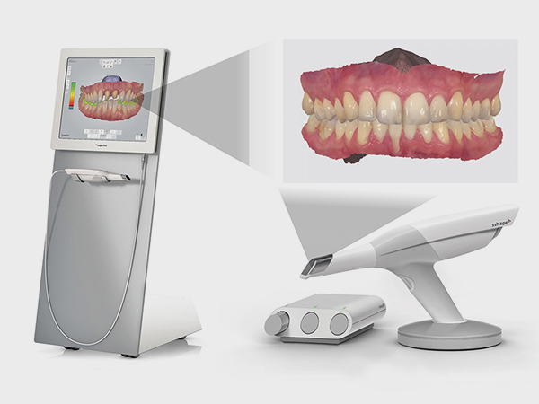
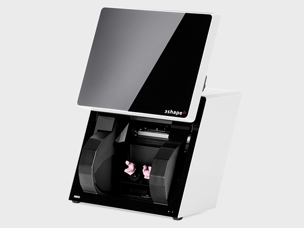
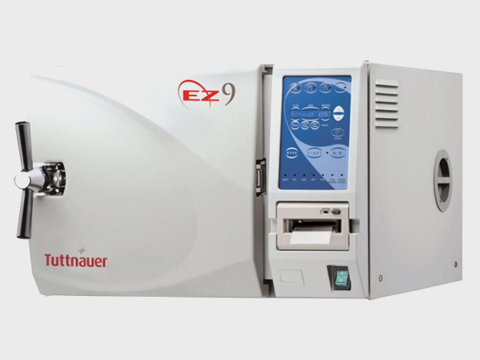
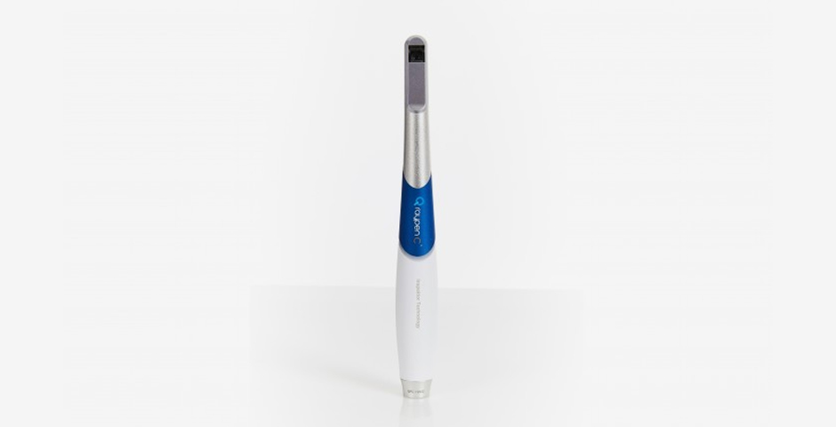
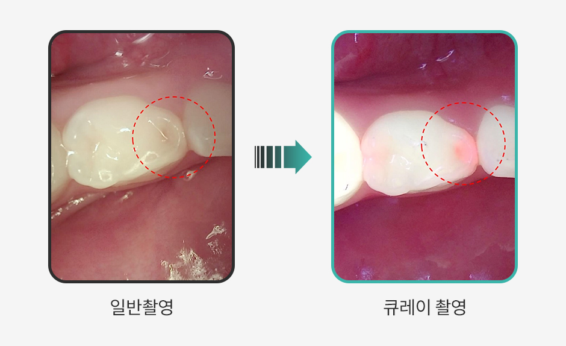
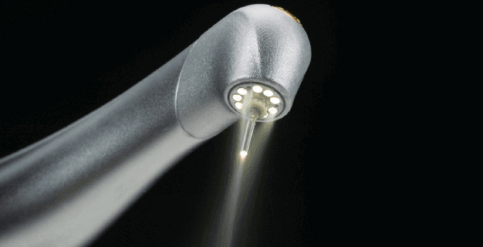
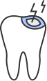
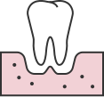
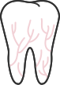

더 깊게 보고, 더 많이 보고
저선량 3D CT
정확한 진단을 위해 신경, 혈관까지의 길이를 정확히 측정하여
임플란트 수술시 의료사고가 거의 없이 안전하게 시술받을 수 있습니다.
<%=m_client_en%>

정확한 진단을 위해 신경, 혈관까지의 길이를 정확히 측정하여
임플란트 수술시 의료사고가 거의 없이 안전하게 시술받을 수 있습니다.

치아의 본을 뜨는 과정없이 빠르고 정밀하게
구강상태를 파악할 수 있는 3D구강스캐너를 사용하고 있습니다.

정밀하게 구현된 3D 영상은
구강 내 질환이나 해부학적 구조물의 형태를 검사할 수 있으며,
환자에게 효율적으로 설명이 가능합니다. 임플란트 수술, 교정, TMJ진단 등
특화된 진료 영역에서 정확한 진단 기능을 제공합니다.

석고모델로 디지털 보철 제작 시 필요한 3D 스캐너입니다.
석고모델로 재현된 구강을 다시 3D 이미지로 변환하는데 없어서는 안될
중요한 단계이며 변환된 데이터는 디지털 보철디자인을 거쳐
Trione Z 등 디지털 밀링머신에서 제작됩니다.

Trios 구강스캐너를 통해 얻은 구강 정보를 토대로 디자인된 보철물을
한치의 오차도 없이 그대로 가공하는 첨단 Milling Machine입니다.

병원내 모든 기구 등을 철저하게 소독, 관리하여
교차감염 등을 철저히 예방하고 있습니다.
X-Ray와 달리 인체에 무해한 푸른색 가시광선으로 입 안의
세균 활성을 탐지해 치아의 우식, 실금(크랙), 치태 등을
확인할 수 있는 보건복지부 인증을 받은 신의료기술입니다.
구강 상태를 보다 객관적이고 정확도 있게 관찰할 수 있습니다.

인체에 무해한
가시광선을
사용해 안전
보건복지부 및
FDA, ADA 승인을
받은 특허 기술
치아 사이까지
객관적이고 정확한
검사 가능
건강보험
적용 가능
예방, 보철, 보존
치주, 등 다양한
치과 진료에
활용 가능

소형 카메라를 통한 간단한 촬영으로 육안으로 확인하기 어려운 치아 사이사이의 충치,
치아의 실금(크랙), 치태, 초기우식, 보철물 이상 등을 명확하게 관찰합니다 .
기존의 치과용 레이저는 열로 녹이거나 익혀서 자르는 원리를 이용한 것 이지만
물방울레이저는 레이저 힘이 담긴 깨끗한 물방울을 환부에 조사하여 치료하는 방식입니다.
여러장점이 있어 다양한 치과 진료에 사용됩니다.

열에 의한 조직손상과
출혈이 적어
빠른 치유 가능
통증이 적어
최소마취
시술 가능
치료 후 빠르게
정상구강활동
가능
탁월한 살균력으로
항염증 및
감염위험 감소
치료 부위만 조사 하여
치아조직의
손실이 적음

초기의 작은 충치부터 심한 충치로 신경치료를
요하는 심한 충치까지
미세한 양의 마취와
적은 통증으로 시술이 가능하며
재발의 위험을
최소화합니다.
물방을레이저를 이용한 임플란트는
자연친화적이며
인체공학적 나노기술입니다.
무엇보다 최상의 임플란트 성공률을 보장하며
수술 후의 통증, 붓기 등의 증상이 적어 보다
편안하며 치료 회복이 빠릅니다.

잇몸병의 대부분은 염증부위를 도려내는
힘든 수술이 불가피했지만
물방울레이저는
어렵고 힘든 수술을 하지 않아도
잇몸병을
치료할수있습니다.

시린이는 재발이 쉬워서 치료가 비교적
까다로운 경우가 많습니다.
물방을레이저는 이와 같은 시린이 치료에도
효과적으로 작용하여 좋은 효과를 얻을 수 있습니다.